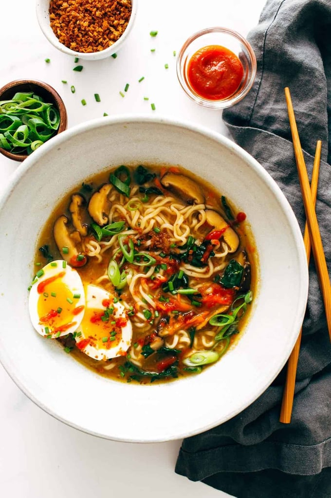

Quick Homemade Ramen

Take the usual ramen up a notch with this quick homemade ramen. Fresh veggies and herbs
make this extra delicious, healthy, and cozy!
Fresh vegetables? Quick and easy homemade broth? A soft-boiled egg and a pile of our
favorite curly-cue packaged ramen noodles that remind us of college? That’s this
homemade ramen. This recipe leans more in the direction of
I-have-a-package-of-ramen-and-some-vegetables-can-we-make-lunch practical.
Sort of healthy and fast and a little nostalgic (packaged ramen!) but also fresh-ly
delicious with a ton of flavor.
Ingredients
- 1 tablespoon of sesame oil
- 3 teaspoons of grated ginger
- 4 teaspoons of grated garlic
- 4 cups of chicken or vegetable broth
- 4 cups of water
- 1 ounce of dried shiitake mushrooms
- 2 packes of instant ramen (noodles only!)
- 1/2 cup of chopped scallions or chives
- 2 cups of chopped kale
- 1 cup of shredded carrots
- Sriracha to taste
- crunchy golden panko crumbs for topping
Instructions
- Heat the sesame oil in a large skillet over medium low heat. Add the garlic
and ginger; stir fry for 2 minutes or until soft and fragrant.
- Add the broth and the water. Bring to a simmer; add the mushrooms and simmer
for 10 minutes or until the mushrooms have softened and the broth is
flavorful.
- Add the instant noodles to the hot liquid and simmer for an additional
5 minutes or until the noodles have softened. Add the scallions and stir to
combine.
- Remove from heat, stir in the kale and carrots, and top with crunchy panko
crumbs (see notes) and a soft-boiled egg (optional). Season with chili oil,
hot sauce, sesame oil, and/or soy sauce and salt to taste.
Notes
To make crunchy golden panko crumbs, heat a few tablespoons of oil in a large
skillet over medium heat. Add the panko, stir for one minute or less, or until
golden brown. Remove and place on paper towels to drain. You can also toss the
anko with a little oil and toast them in the oven to get them golden and
crispy.